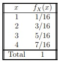
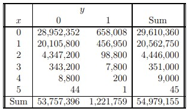
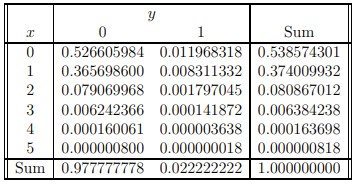
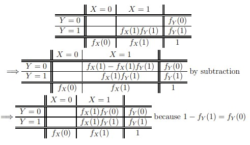
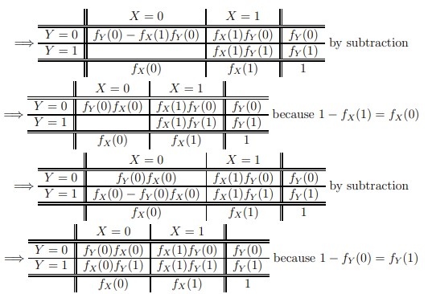
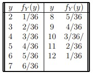
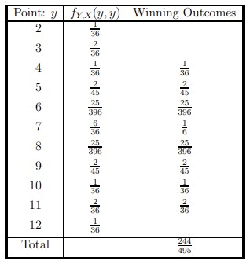

Chapter 2 Discrete Random Variables
Definition: A Random Variable is a characteristic of the outcome of an experiment.
Notation: Use capital letters to denote random variables (rvs). Example: \(X(\omega)\) is a rv. Use small letters to denote a realization of the random variable.
Example: Consider the experiment of choosing a student at random from a classroom. Then \(\Omega\) = \(\{\)Jack, Dolores, \(\dots \}\). Let \(X(\omega)\) be a characteristic of student \(\omega\). Then \(X(\omega)\) is a rv.
Types of random variables
- Categorical versus Numerical
● \(X(\omega)\) = gender of selected student is a categorical random variable and \(X(\omega_2)\) = \(x_2\) = “female” is a realization of the random variable.
● \(Y(\omega)\) = age of selected student is a numerical random variable and \(Y(\omega_1)\) = \(y_1\) = 19.62 is a realization of the random variable.
- Continuous versus Discrete
● If the possible values of a rv are countable, then the rv is discrete.
● If the possible values of a rv are contained in open subsets (or half open subsets) of the real line, then the rv is continuous.
- Categorical versus Numerical
2.1 Probability Functions
Definition: The probability function (p.f.) of a discrete rv assigns a probability to the event \(X(\omega)\) = \(x\). The p.f. is denoted by \(f_X(x)\) and is defined by
\[ f_X(x) \overset{\rm def}= \Pr[X(\omega) = x] = \displaystyle\sum_{X(\omega) = x} \Pr(\omega). \]
This function also is called a probability mass function (pmf). The terminology pmf appears to be more often used than p.f., so I will use pmf rather than p.f.The pmf can be an equation, a table, or a graph that shows how probability is assigned to possible values of the random variable.
The distribution of probabilities across all possible values is called the probability distribution. A probability distribution may be displayed as (a) a table, (b) a graph, or (c) an equation.
Examples
- Example: Roll a fair four sided die twice. The face values on the die are 1, 2, 3, and 4. The sample space is \(\Omega\) = \(\{\)(1, 2),(1, 2), . . . ,(4, 4)\(\}\). Note that \(\#(\Omega)\) = 16 and each outcome \(\omega = (\omega_1, \omega_2)\) is equally likely. Let \(X(\omega) = \max(\omega_1, \omega_2)\). Find the pmf of \(X\). Solution:

- Example: Choose a baby name at random from \(\Omega\) = \(\{\)John, Josh, Thomas, William\(\}\). Let \(X(\omega)\) =first letter of name. Then \(P(X = J) = 0.5\).
- Support of the distribution: The set of possible values of \(X\) that have non-zero probability is called the support of the distribution. We will denote this set by \(S\). That is,
\[ S = {x; f(x) ＞0}. \]
The support of a random variable is analogous to the sample space of an experiment. Note, \(f_X(x)\) is abbreviated as \(f(x)\). This convention will be followed if it is clear that the pmf \(f(x)\) refers to the random variable \(X\).
Properties of a pmf
● \(f(x) ≥ 0\) for all \(x\). This property also can be written as \(f(x) ≥ 0 \ \forall x.\)
● \(\displaystyle\sum_{x \in S} \Pr(X = x) = 1\).Indicator Function:
\[ I_A(a) = \begin{cases} 1 & \text{ if } a \in A, \\ 0 & \text{otherwise.} \end{cases} \]
- Application of indicator function. Consider, again, the random variable \(X(\omega) = \max(\omega_1, \omega_2)\), where \((\omega_1, \omega_2)\) is an outcome when rolling a fair four-sided die twice. The pmf of \(X\) is
\[ f_x(x) = \begin{cases} \frac{2x-1}{16} & \text{ if } x = 1, 2, 3, 4 \\ 0 & \text{otherwise.} \end{cases} \\ = \frac{2x-1}{16}I_{\{1,2,3,4\}}(x) \]
2.2 Joint Distributions
- Joint Probability Functions: Let \(X\) and \(Y\) be discrete random variables defined on \(S_X\) and \(S_Y\) , respectively. Then the joint pmf (or p.f.) of \((X, Y)\) is defined as
\[ f_{X, Y}(x, y) \overset{\rm def}= \Pr[X(\omega) = x, Y(\omega) = y] = \Pr(X = x, Y = y). \]
Note, joint distributions can be extended from the bivariate case (above) to the general multivariate case. A joint pmf satisfies
\[ f(x, y) ≥ 0 \ \text{for all pairs} \ (x, y) \ \text{and} \\
\displaystyle\sum_{(x, y) \in S} f(x, y) = 1, \ \text{where} \\
S = S_X × S_Y = \{(u, \upsilon); \ u \in S_X, \ \upsilon \in S_Y \}. \]
Note: The set \(S = S_X × S_Y\) could include \((x, y)\) pairs that have probability zero. If so, then the true support is a subset of \(S\).
Example: Two way table for powerball. See problem 1-R11 on page 39. Let \(X(\omega)\) = number of matches out of 5 on first drawing and \(Y(\omega)\) = number of matches out of 1 on second drawing. Then
where \(x = 0, . . . , 5\) and \(y = 0, 1\). For other values of \(x\) and \(y\), the probability is zero. These probabilities, multiplied by 54,979,155, are given below:

In decimal form, the probabilities are

- Marginal pmf: Sum the joint pmf over all other variables to obtain the marginal pmf of one random variable.
- \(f_X(x) = \displaystyle\sum_{y \in S_Y} f(x, y)\).
- \(f_Y(y) = \displaystyle\sum_{x \in S_x} f(x, y)\).
- \(f_Z(z) = \displaystyle\sum_{x \in S_x}\displaystyle\sum_{y \in S_Y} f_{X, Y, Z}(x, y, z)\).
- \(f_X(x) = \displaystyle\sum_{y \in S_Y} f(x, y)\).
- Example 1: The marginal pmfs for the powerball problem are
\[ f_X(x) = \displaystyle\sum_{y=0}^{1}f_{X, Y}(x, y) = P(X = x) = \frac{\binom{5}{x}\binom{40}{5-x}}{\binom{45}{5}} I_{\{0, 1, \dots, 5\}}(x) \ \text{and} \\
f_Y(y) = \displaystyle\sum_{x=0}^{5}f_{X, Y}(x, y) = P(Y = y) = \frac{\binom{1}{y}\binom{44}{1-y}}{\binom{45}{1}} I_{\{0, 1\}}(y). \]
The numerical values of these pmfs are displayed in the margins of the tables on page 26.
- Example 2: Suppose that
\[ f_{X, Y}(x, y) = \begin{cases} \frac{2(i + 2j)}{3n(n + 1)^2} & i = 0, 1, \dots, n \ \text{ and } j = 0, 1, \dots, n \\ 0 & \text{otherwise.} \end{cases} \]
Use the result
\[ \displaystyle\sum_{i=0}^n i = \displaystyle\sum_{i=1}^n i = \frac{n(n + 1)}{2} \]
to obtain
\[ f_{X}(i) = \begin{cases} \frac{2(n + i)}{3n(n + 1)} & i = 0, 1, \dots, n \\ 0 & \text{otherwise.} \end{cases} \ \text{and} \\ f_{Y}(j) = \begin{cases} \frac{n + 4j}{3n(n + 1)} & j = 0, 1, \dots, n \\ 0 & \text{otherwise.} \end{cases} \\ \]
2.3 Conditional Probability
- Definitions:
\[ P(\omega|B) \overset{\rm def}= \begin{cases} \frac{P(\omega)}{P(B)} & \text{if} \ \omega \in B \\ 0 & \text{otherwise.} \end{cases} \\ P(A|B) \overset{\rm def}= \frac{P(A \cap B)}{P(B)} \ \text{provided that} \ P(B) ＞ 0. \]
These quantities are read as “probability of \(\omega\) given \(B\)” and “probability of \(A\) given \(B\).” Think of \(B\) as the new sample space and then re-scale \(P(\omega)\) and \(P(A \cap B)\) relative to \(P(B)\).
- Examples:
- I will do \(\#2.15\) on page \(58\) in class.
- I will do \(\#2.17\) on page \(58\) in class.
- Lets Make a Deal. Note: this is not the same game that is described on page \(79\) of the text. An SUV is randomly placed behind one of three identical doors. Goats are placed behind the other two doors. You choose a door (say door 1) and will win the item behind the door after it is opened. Before your door is opened, however, Monte Hall reveals a goat behind one of the two remaining doors (either door 2 or door 3). If he reveals a goat behind door 2, then he gives you the option of switching from door 1 to door 3. If he reveals a goat behind door 3, then he gives you the option of switching from door 1 to door 2. To maximize the probability of winning the SUV, should you stick with your original choice or should you switch? Assume that Monte knows where the SUV is; he always reveals a goat; and he never reveals the content behind the door that you choose.
Solution: Let \(C = i\) (C for choose) be the event that your initial choice is door \(i\). Let \(S = i\) (\(S\) for SUV) be the event that the SUV is behind door \(i\). Let \(R = i\) (\(R\) for reveal) be the event that Monte reveals a goat behind door \(i\). Conditional on \(C = 1\), the table of joint probabilities for \((R, S)\) is as follows

In the above table, the value of p1 must satisfy \(p_1 \in (0,\frac{1}{3})\). If Monte chooses a door at random when \(S = 1\), then \(p_1 = \frac{1}{6}\). Accordingly,
\[ P(S = 1|C = 1) = \frac{1}{3}, \\ P(S ≠ 1|C = 1) = 1 - P(S = 1|C = 1) = \frac{2}{3}. \]
If your strategy is to stay with door 1, then you win the SUV with
probability \(\frac{1}{3}\). If your strategy is to switch, then you will win the SUV if \(S ≠ 1\) because you always switch to the correct door. This event has probability \(\frac{2}{3}\). Therefore, the best strategy is to switch. For more information, go to http://math.rice.edu/∼ddonovan/montyurl.html.
- Multiplication Rule
- Two events: \(P(E \cap F) = P(F|E)P(E) = P(E|F)P(F)\).
- More than two events: \(P(\displaystyle\bigcap_{i=1}^{k} E_i) = P(E_1)\prod_{j=2}^{k}P(E_j|\bigcap_{i=1}^{j-1}E_j)\). For example, with 4 events,
\(P(E_1, E_2, E_3, E_4) = P(E_1) × P(E_2|E_1) × P(E_3|E_1, E_2) × P(E_4|E_1, E_2, E_3)\).
- Two events: \(P(E \cap F) = P(F|E)P(E) = P(E|F)P(F)\).
- Applications of Multiplication rule
- If samples are selected at random one at a time without replacement, then all sequences are equally likely.
Proof: The number of distinct sequences of \(n\) objects selected from \(N\) objects is \((N)_n\) Label the \(N\) objects as \(o_1, o_2, \dots , o_N\). Label the first selection as \(S_1\), the second selection as \(S_2\), etc. Then
- If samples are selected at random one at a time without replacement, then all sequences are equally likely.
\[ (S_1 = o_{i_1}, S_2 = o_{i_2}, S_3 = o_{i_3}, \dots , S_n = o_{i_n}) \]
is a sequence provided that the subscripts \(i_1, i_2, \dots , i_n\) are all distinct. For example, if \(N = 100\) and \(n = 3\), then \((S_1 = o_{23}, S_2 = o_{14}, S_3 = o_{89})\) is a sequence. Using the multiplication rule, the probability of a sequence can be written as follows:
\[ P(S_1 = o_{i_1}, S_2 = o_{i_2}, S_3 = o_{i_3}, \dots , S_n = o_{i_n}) \\ = P(S_1 = o_{i_1}) × P(S_2 = o_{i_2}|S_1 = o_{i_1}) × P(S_3 = o_{i_3}|S_1 = o_{i_1}|S_2 = o_{i_2}) \\ × \dots × P(S_n = o_{i_n}|S_1 = o_{i_1}, \dots, S_{n-1} = o_{i_{n-1}}) \\ = \frac{1}{N} × \frac{1}{N-1} × \frac{1}{N-2} × \dots × \frac{1}{N-n+1} = \frac{(N-n)!}{N!} = \frac{1}{(N)_n}. \]
Accordingly, all sequences are equally likely.
(b) If samples are selected at random without replacement, then all combinations are equally likely.
Proof: The unordered set
\[ (o_{i_1}, o_{i_2}, \dots, o_{i_n}) \]
is a combination provided that the subscripts \(i_1, i_2, \dots , i_n\) are all distinct. The number of distinct combinations is \(\binom{N}{n}\) and the objects in each combination can be ordered in \(n!\) ways. Therefore, each combination corresponds to \(n!\) sequences and
\[ P(o_{i_1}, o_{i_2}, \dots, o_{i_n}) = n! × (S_1 = o_{i_1}, S_2 = o_{i_2}, \dots , S_n = o_{i_n}) = \frac{n!}{(N)_n} = \frac{1}{\binom{N}{n}}. \]
Accordingly, each combination is equally likely.
- Conditional pmf: Let \(X\) and \(Y\) be discrete random variables. Then,
\[ f_{X|Y}(x|y) \overset{\rm def}= P(X = x| Y = y) = \frac{f_{X,Y}(x,y)}{f_Y(y)} = \frac{P(X = x, Y = y)}{P(Y = y)} \]
2.4 Bayes Theorem (Law of Inverse Probability)
Bayes Theorem answers the question—How do you express \(P(E|F)\) in terms of \(P(F|E)\)?
- Bayes Theorem states that
\[ P(E|F) = \frac{P(F|E)P(E)}{P(F|E)P(E) + P(F|E^c)P(E^c)}. \]
Proof:
\[ P(E|F) = \frac{P(E \cap F)}{P(F)} \ \text{by the definition of conditional probability} \\ = \frac{P(F|E)P(E)}{P(F)} \ \text{by the multiplication rule} \\ = \frac{P(F|E)P(E)}{P(F \cap E) + P(F \cap E^c)} \ \text{by the law of total probability} \\ = = \frac{P(F|E)P(E)}{P(F|E)P(E) + P(F|E^c)P(E^c)} \ \text{by the multiplication rule}. \]
- More generally, Bayes Theorem states that if \(E_1, E_2, \dots , E_n\) is a partition of \(\Omega\), then
\[ \Pr(E_k|F) = \frac{\Pr(F|E_k)\Pr(E_k)}{\displaystyle\sum_{i=1}^{n} \Pr(F|E_i)\Pr(E_i)}. \]
Furthermore, the conditional odds of \(E_i\) to \(E_j\) is
\[ \text{Odds of } E_i \text{ to } E_j \text{ conditional on } F = \frac{P(E_i|F)}{P(E_j|F)} = \frac{P(F|E_i)}{P(F|E_j)} × \frac{P(E_i)}{P(E_j)}. \]
2.5 Statistical Independence of Random Variables
Definition: Two random variables, \(X\) and \(Y\) , are independent if and only if (iff) \(f_{X,Y}(x, y) = f_X(x)f_Y(y)\) for all \((x, y) \in S_{X,Y}\). To denote independence, we write \(X ㅛ Y\).
Definition: \(k\) random variables, \(X_1, X_2, \dots , X_k\), are mutually independent iff \(f(x_1, \dots, x_k) = \displaystyle\prod_{i=1}^{k}f_i(x_i)\) for all \((x_1, \dots, x_k) \in S_{X_1, \dots, X_k}\).
Example: Consider a random variable \(X\) with pmf \(f_X(x)\). Let \(X_1, X_2, \dots , X_n\) be a sequence of random variables obtained by sampling at random from \(f_X\) . Then, \(X_1, \dots , X_n\) are independent random variables and their joint distribution is \(f_{X_1, \dots, X_n}(x_1, \dots , x_n) = \prod_{i=1}^{n}f_X(x_i)\).
Independent Events. Let \(E_1, E_2, \dots , E_k\) be events. A set of indicator random variables, \(X_1, \dots , X_k\) can be defined as
\[X_i = \begin{cases} 1 & \text{if } E_i \text{ occurs, and } \\ 0 & \text{otherwise.} \end{cases} \]
Then the events \(E_1, E_2, \dots , E_k\) are mutually independent if and only if the indicator variables \(X_1, \dots , X_k\) are mutually independent.
- Result: Let \(A\) and \(B\) be events. Then \(A ㅛ B\) if and only if \(P(A \cap B) = P(A)P(B)\).
Proof: Define the random variables \(X\) and \(Y\) as
\[X_i = \begin{cases} 1 & \text{if } A \text{ occurs, } \\ 0 & \text{otherwise} \end{cases} \text{ and } Y = \begin{cases} 1 & \text{if } B \text{ occurs, } \\ 0 & \text{otherwise.} \end{cases}\]
First, assume that \(A ㅛ B\). Then
\[ A ㅛ B \Leftrightarrow X ㅛ Y \\ \Rightarrow P(A \cap B) = f_{X, Y}(1, 1) = f_X(1)f_Y(1) = P(A)P(B). \]
Second, assume that \(P(A \cap B) = P(A)P(B)\). Then,
\[ P(A \cap B) = P(A)P(B) \Rightarrow f_{X, Y}(1, 1) = f_X(1)f_Y(1). \]
Use this result to fill in the two-by-two table of joint and marginal probabilities:


\[ \Rightarrow X ㅛ Y \text{ because } f_{X, Y}(x, y) = f_X(x)f_Y(y) \text{ for } x = 0, 1, \ y = 0, 1 \\ \Rightarrow A ㅛ B \]
- Example: : Roll two distinct fair 6-sided dice. Let \(E_1\) be the event that the first die is odd, et \(E_2\) be the event that the second die is even, and let \(E_3\) be the event that there exactly one odd and one even die occur. Are these events mutually independent? Are there any pairs of events that are independent?
2.6 Exchangeability
Definition: Two random variables, \(X\) and \(Y\) , are said to be exchangeable iff \(f_{X, Y}(x, y) = f_{X, Y}(y, x)\) for all \((x, y) \in S_{X, Y}\). Note, if \(X\) and \(Y\) are exchangeable, then \(S_{X, Y} = S_{Y, X}\).
Definition: \(n\) random variables, \(X_1, \dots , X_n\) are said to be exchangeable iff \(f_{X_1, \dots, X_n}(x_1, \dots, x_n) = f_{X_1, \dots, X_n}(x^*_1, \dots, x^*_n)\) for all \((x_1, \dots , x_n) \in S_{X_1, \dots ,X_n}\) and for all \((x^*_1, \dots, x^*_n)\), where \((x^*_1, \dots, x^*_n)\) is a permutation of \((x_1, \dots, x_n)\). Note, the equality must be satisfied for all \(n!\) permutations.
Result: If \(X_1, \dots , X_n\) are exchangeable, then the marginal distributions of each \(X_i\) are identical. Also, the joint distributions of any subset of \(k \ Xs\) is thesame as the distribution of any other set of \(k \ Xs\), where \(k\) can be \(1, 2, \dots , n\).
Proof that bivariate marginals are identical when 3 random variables are exchangeable: Recall, that the joint pmf of \(X_1\) and \(X_2\) is obtained from the joint pmf of \(X_1, X_2\), and \(X_3\) as follows:
\[ f_{X_1, X_2}(x_1, x_2) = \sum_{x_3 \in S_{X_3}}f_{X_1, X_2, X_3}(x_1, x_2, x_3). \]
If \(X_1, X_2\), and \(X_3\) are exchangeable, then
\[ f_{X_1, X_2, X_3}(x_1, x_2, x_3) = f_{X_1, X_2, X_3}(x_1, x_3, x_2) and \\ f_{X_1, X_2}(x_1, x_2) = \sum_{x_3 \in S_{X_3}}f_{X_1, X_2, X_3}(x_1, x_3, x_2) = f_{X_1, X_3}(x_1, x_2) \]
Also,
\[ f_{X_1, X_2, X_3}(x_1, x_2, x_3) = f_{X_1, X_2, X_3}(x_3, x_1, x_2) and \\ f_{X_1, X_2}(x_1, x_2) = \sum_{x_3 \in S_{X_3}}f_{X_1, X_2, X_3}(x_3, x_1, x_2) = f_{X_2, X_3}(x_1, x_2) \]
Accordingly, exchangeability implies that
\[ f_{X_1, X_2}(x_1, x_2) = f_{X_1, X_3}(x_1, x_2) = f_{X_2, X_3}(x_1, x_2) \]
In the same manner, it can be shown that exchangeability implies that
\[ f_{X_1}(x_1) = f_{X_2}(x_1) = f_{X_3}(x_1) \]
Example 1: If \(X_1, \dots , X_n\) are independently and identically distributed (iid), then \(X_1, \dots , X_n\) are exchangeable.
Example 2: Consider the procedure of sampling at random without replacement from a finite population of size \(N\). Let \(X_1, X_2, \dots , X_n\) be the first, second, etc selection and let \(x_1, \dots , x_n\) be the population units. The random variables are not independent but the random variables are exchangeable. For example
\[ f_{X_1, X_2}(x_i, x_j) = f_{X_1}(x_i)f{X_2|X_1}(x_j|X_1 = x_i) \\ = \bigg(\frac{1}{N} \bigg) \bigg(\frac{1}{N-1} \bigg) = \frac{1}{N(N-1)} \text{ and } \\ f_{X_1, X_2}(x_j, x_i) = f_{X_1}(x_j)f{X_2|X_1}(x_i|X_1 = x_j) \\ = \bigg(\frac{1}{N} \bigg) \bigg(\frac{1}{N-1} \bigg) = \frac{1}{N(N-1)}. \]
2.7 Application: Probability of Winning in Craps
Recall, the rules of the game are as follows. Roll a pair of dice (i.e., two die). If the sum of the dice is 7 or 11, then the player wins and the game is over. If the sum of the dice is 2, 3, or 12, then the player loses and the game is over. If the sum of the dice is anything else, then the sum is called “the point” and the game continues. In this case, a player repeatedly rolls the pair of dice until either the sum is either 7 or equal to the point. If a 7 occurs first, then the player loses. If the point occurs first, then the player wins.
The sample space when rolling two dice is
\[ \Omega = \{(1,1), (1,2), (2,1), \dots, (6,6) \}. \]
If the dice are fair, then the 36 outcomes are equally likely. Let \(Y(\omega)\) be the sum of the two dice on the first roll. It is easy to show that the pmf for \(Y\) is

Alternatively,
\[ f_Y(y) = \frac{6 - |x - 7|}{36}I_{\{2, 3, \dots, 12\}}(x). \]
- Let \(X(\omega)\) be the sum of the dice on the last roll of the game. Then the joint support for \((Y, X)\) is
\[ S_{Y, X} = { \{(2, 2),(3, 3),(4, 4),(4, 7),(5, 5),(5, 7),(6, 6),(6, 7),} \\ {(7, 7),(8, 8),(8, 7),(9, 9),(9, 7),(10, 10),(10, 7),(11, 11),(12, 12)\}}. \]
The winning \((Y, X)\) values are
\[ (4, 4),(5, 5),(6, 6),(7, 7),(8, 8),(9, 9),(10, 10), \text{ and } (11, 11). \]
The losing (Y, X) values are
\[ (2, 2),(3, 3),(4, 7),(5, 7),(6, 7),(8, 7),(9, 7),(10, 7), \text{ and } ,(12, 12). \]
- Suppose that the first roll yields a 4. Then the game continues until a 7 or another 4 is rolled. Denote a non-4, non-7 by \(N\). Then the game is won if a sequence such as \(\{4, 4\}, \{4, N, 4\}, \{4, N, N, 4\}, \{4, N, N, N, 4\}\) etc is observed. Note that \(P(N) = 1 − P(4) − P(7) = 27/36\). In any case, the first roll is a 4 and the last role is a 4. That is, \(Y = 4\) and \(X = 4\). The probability that \(Y = 4\) and \(X = 4\) can be computed as follows:
\[ f_{Y, X}(4, 4) = P\{4, 4\} + P\{4, N, 4\} + P\{4, N, N, 4\} + P\{4, N, N, N, 4\} + \cdots \\ = \bigg(\frac{3}{36} \bigg)^2 + \bigg(\frac{3}{36} \bigg)^2\bigg(\frac{27}{36} \bigg) + \bigg(\frac{3}{36} \bigg)^2 \bigg(\frac{27}{36} \bigg)^2 + \bigg(\frac{3}{36} \bigg)^2 \bigg(\frac{27}{36} \bigg)^3 \cdots \\ = \bigg(\frac{3}{36} \bigg)^2 \displaystyle\sum_{i=0}^{\infty} \bigg(\frac{27}{36} \bigg)^i \\ = \bigg(\frac{3}{36} \bigg)^2 \frac{1}{1-\Big(\frac{27}{36} \Big)} \text{ by the geometric series result } \\ = \frac{1}{36}. \]
Furthermore, the conditional probability of winning, given that the point is 4 is
\[ f_{X|Y}(4|4) = \frac{f_{Y, X}(4, 4)}{f_Y(4)} = \frac{1/36}{3/36} = \frac{1}{3}. \]
Accordingly,
\[ f_{X|Y}(x|4) = \begin{cases} \frac{1}{3} & \text{if } x = 4 \\ \frac{2}{3} & \text{if } x = 7 \\ 0 & \text{otherwise.} \end{cases} .\]
- The probabilities \(f_{Y, X}(y, y)\) are summarized in the following table. The probabilities that correspond to a win are summed. The result is
\[ P(\text{Win}) = \frac{244}{495} = 0.5 − \frac{7}{990} ≈ 0.4929. \]
